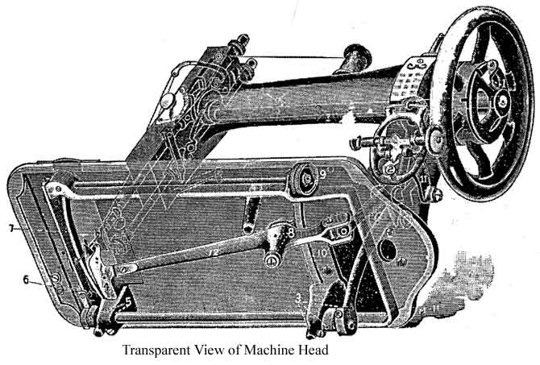

Slip the clutch out of the fly wheel so that the balance wheel will revolve without running the machine, then turn the bobbin winder adjuster screw at the bottom of the bobbin winder until the rubber pulley comes into contact with the balance wheel. Place the bobbin in the winder, then down behind the winder frame until it slips into the notch at the bottom of the frame.
Holding the thread taut in the left hand, slide the grooved pulley on the curved shaft to the right then place the spring pad to rest against the bobbin. Lastly, proceed to wind the bobbin by running the machine, allowing the thread to pass through the hand to steady it, and the bobbin will wind itself automatically.
Take the shuttle in the left hand, the point toward you. Drop the bobbin into the shuttle so that the thread will unwind from the right hand side of the bobbin. Pass the thread into the slot, holding the thread slightly taut by pressure of the left forefinger upon the end of the bobbin.
Draw the thread toward you, release the pressure on the bobbin soon as the thread comes against the lip of the shuttle spring, and it will readily draw under it. Then, pass the thread to the right and down, back under both shuttle springs and again holding the thread taut as before, tighten the thread by drawing it straight toward the heel of the shuttle until the thread passes under the other lip of the shuttle spring. The shuttle is then ready for use.
To replace the bobbin case, simply slip it on the pin in shuttle with the tension projecting upward, and push it into shuttle, as far as it will go, when the spring latch will pass over and retain it in that position.
The thread should be allowed to project about two incehs from the bobbin case tension.
1. Place your machine in proper position for threading by raising the presser foot, using the lever at the back of the face, then turn the hand wheel so the takeup 8 is at its highest point.
2. Place the spool of thread on the spool pin 1, use the first finger and thumb of the right hand to put a slight tension on the thread while doing the subsequent threading operation. Then take the end of the the thread between the thumb and first finger of the left hand; place the thread around the rivet 2 from back to front; then towards the rear of the face under the washer 3; then through the notch 4. Next take the thread and hook it under the point 5 of the tension plate, hooking under from the side of the machine nearest you. Move the hand toward the back, and pull the thread upward until it passes through the eye of the auxiliary spring 6, and into notch 7. We now pull the thread upwards, hooking it into the spring on the end of the take-up 8.
All these steps can be done without changing the position of the thread between the thumb and first finger.
We now place the thread through the guide 9 on end of the needle bar, which is done by pulling it in through the slot. We are now ready to snip off the end of the thread, and thread it through the needle, threading from the left to the right. Allow about two inches of thread to project beyond the needle when the take-up is at its highest point.
Hold the end of the upper thread loosely in the left hand, and with the right hand gently revolve the hand-wheel, turning the top side from you until the needle passes to its lowest point and returns. A loop will be formed through which shuttle will pass, and, as the needle ascends it will draw up the lower or shuttle thread. The ends of the threads should then be passed under and to the rear of presser-foot. The machine is now ready for sewing.
To loosen the tension, turn the thumbscrew on the dial to the left that will move the pointer towards number 1. To tighten it, turn to the right, moving the pointer towards number 8.
By this means the same tension can always be duplicated, thus obviating the necessity of experimental trials, as in the case with other machines.
If a tight tension is desired, both upper and under threads must necessarily be tight. If the upper thread is tight and the lower thread loose the upper thread will be drawn to the top thus:
If the lower thread is too tight it will be drawn straight on the bottom of goods, thus:
When you desire the stitches to look alike on both sides and to be elastic, balance the tension thus:
To regulate the lower tension, turn tension adjusting screw on the bobbin case to the right to tighten, and to the left to loosen same.
The tension releaser is operated by the presser bar lifter lever. By means of it, all tension is taken off the upper thread when the presser-foot is raised, and the work can be taken out without pulling the thread down by hand.
Always regulate tension of upper thread when presser foot is down.
First remove the bobin case. Turn the head back on its hinges, then turn the handwheel from you in the same direction as in sewing, until the point of the needle just enters the needle-plate hole; push on rear end of latch and at the same time pull shuttle-race cover away from shuttle and toward latch from under pin; the shuttle can now be removed.
When shuttle has been removed from race be sure to clean both and oil the race slightly before replacing. Occasionally oil slightly pin in shuttle. Also see that no thread is wound around bottom of center pin.
Turn the hand-wheel from you until the point of the needle just enters the needle plate hole; take the shuttle by the center pin with the left hand and place it in the race, so that the point of shuttle will be from you and over arrow, this is imperative, so that the holes on the shuttle will drop on to driving pins in race, then replace the shuttle race cover.
DO NOT FORCE the shuttle into race. It will enter readily when in proper position.
Should the machine at any time act badly in sewing or running, remove shuttle, clean it and the race, which is but a moment's work.
The stitch regulator is located at the right end of machine on the front side of arm. TO SHORTEN stitch move the lever down. TO LENGTHEN stitch move lever up. No.1 indicates the shortest, and No. 7 the longest stitch.
To ensure easy running, the machine requires oiling, and if used continuously, it should be oiled each day. With moderate use, an occasional oiling is sufficient. Oil should be applied at each of the places shown by arrows. One drop of oil at each point is sufficient. Oil holes are provided in the machine for bearings that can not readily be reached.
To oil the mechanism under the bobbin cover plate, draw the front slide toward you and after removing the lint and dust which may have accumulated, put a few drops of oil on the wick which is retained in the hole in the bed of the machine. The slide should then be closed.
On the top of the arm is a rectangular cover plate, fastened by a thumb screw. Loosen the screw, and remove the plate, turn the balance wheel slowly and oil the moving parts inside, then replace the cover and fasten it as before.
To reach the parts underneath the bed the belt must be thrown off the band wheel in the machine stand. The places to be oiled are indicated in the illustration, by arrows pointed to the oil holes and bearings.